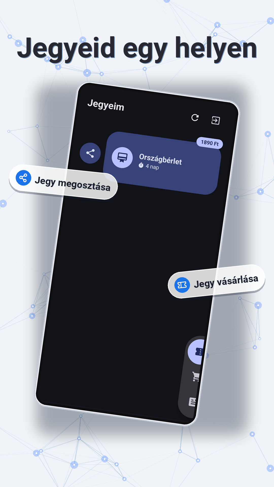
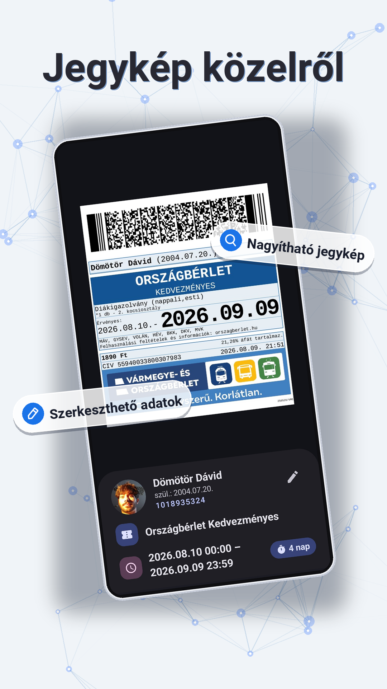
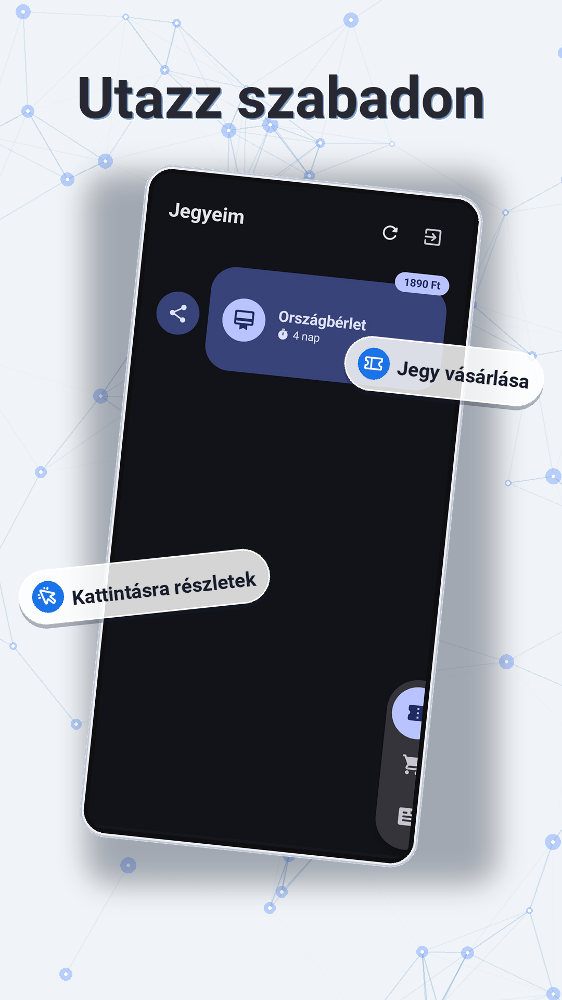
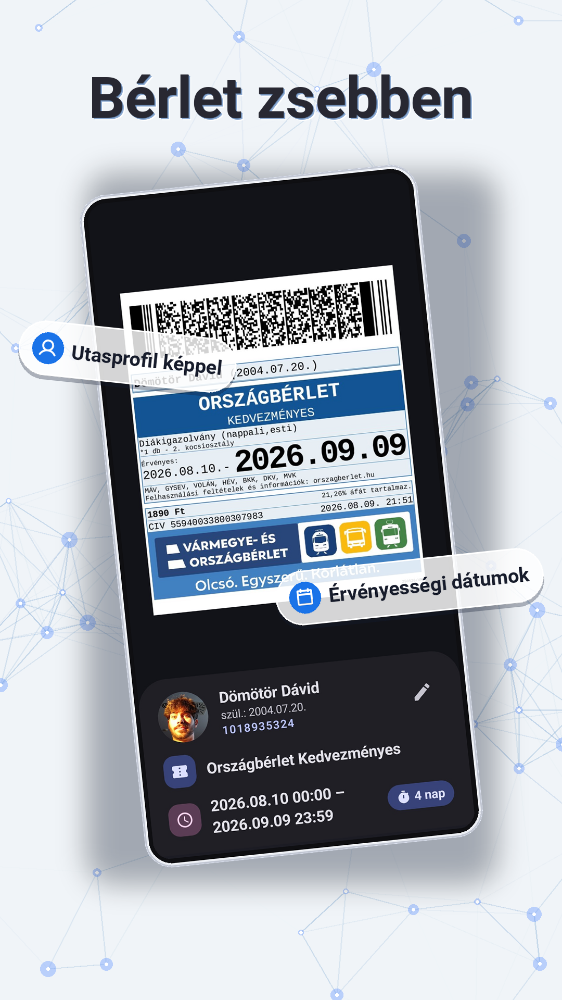

Tömegközlekedés
Jegyeid egy helyen. Trackermentes, offline jegyek, nagyítható jegykép — 1,9 MB.

Funkciók
Offline jegyek
Jegyeid és bérleteid akkor is elérhetők, akármerre utazol — menthetők, megoszthatók.
Egyszerű vásárlás
Jegyeket és bérleteket könnyedén vásárolhatsz, egy kézzel is kezelhető felületen.
Utazási hírek
Kereshető, kitűzhető hírek — mindent egy appon belül intézhetsz utazás előtt és közben.
Állítható jegyméret
Nagyítható jegykép: akkorára veszed, ahová a szkennernek kell — nincs bajlódás a buszon.
Képernyőképek






Miért válts?
Ha eleged van abból, hogy a MÁV hivatalos alkalmazása lassú, illetve biztos akarsz lenni abban, hogy az alkalmazás minden frissítés után jól működjön, akkor ez az app neked lett kitalálva. Regisztrálj fiókot, vagy jelentkezz be a MÁV-fiókodba — egyszer az appban, illetve a jegyvásárlási felületen is.